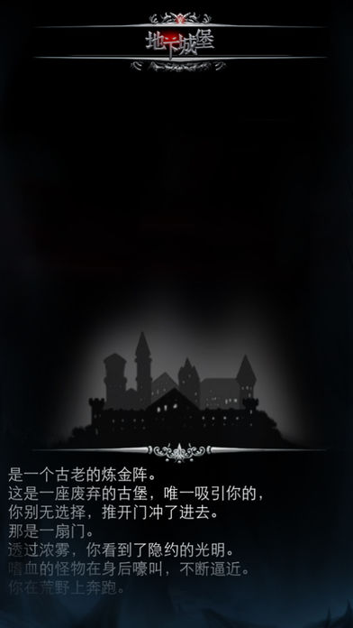

- 

《地下城堡》是一款暗黑风格的模拟经营与迷宫探险游戏。
√ 潜心的体验一个奇幻的世界 -《神马值得玩》
√ 耐心玩上5分钟绝对能够使你越陷越深，无法自拔 - 《18touch》
▶ 成绩
- 先后3次获得 iPhone / iPad 付费榜 Top 1
- 18周 App Store『热门游戏专栏』推荐
- 2015年12月，App Store『2015 趋势盘点』作品
- 2016年01月，威锋网『2015年度国人独立手游』作品
- 2016年04月，获得 App Store 专属背景图
- 累计五星好评数超过80000条
- 累计付费下载量超过100万次
▶ 部分评论
- 赞 ，一直寻找的游戏 - 见贤思奇
- 喵的根本停不下来啊 - 蓝瞳萝莉控
- 良心游戏，无法自拔的沉迷 - 哈利刚刚
- 让人越玩越上心越用心的游戏 - 你是小憨憨
- 内容精致而深邃，如雨夜狂奔，酣畅淋漓 - 东鞋皇腰食
- 很有新意，一个接着一个惊喜 感觉永远没有结束 - qxziuan
▶ 开放式的幻想世界
- 是否受够了过于浮夸的画面？
- 是否不想再被当作无脑玩家，失去体味真正乐趣的机会？
- 是否想驰骋在完全开放式的宏大幻想世界？
- 你的思维有多广阔，游戏就有多丰富。
▶ 探索与建设的完美结合
- 多样的装备打造，不断升级你的探险队伍，50+种职业可随意搭配！
- 慢慢点亮地图探索将不断带给你新的挑战和奇遇，新资源，新关卡，新职业，都在路上！
- 挂机放置玩法，每次打开游戏，都可在城堡中收获定量资源！
- 在城堡中，有限的人口资源会带来生存与资源的压力，聪明的城主一定会运用好工人，控制物资产出，实现城堡富足！
======联系我们======
《地下城堡》官方网站：http://dxcb.leiting.com
《地下城堡》微博：http://weibo.com/taojin520
《地下城堡》微信公众号：dixiacb
《地下城堡》iOS官方15号QQ群：274089062